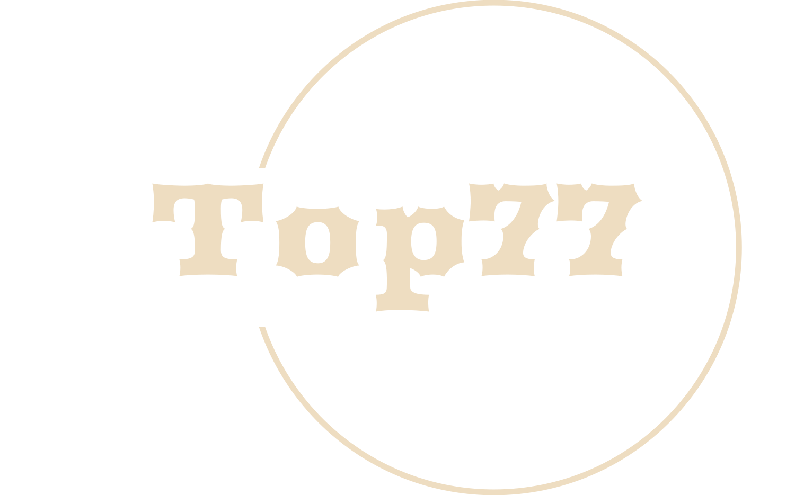
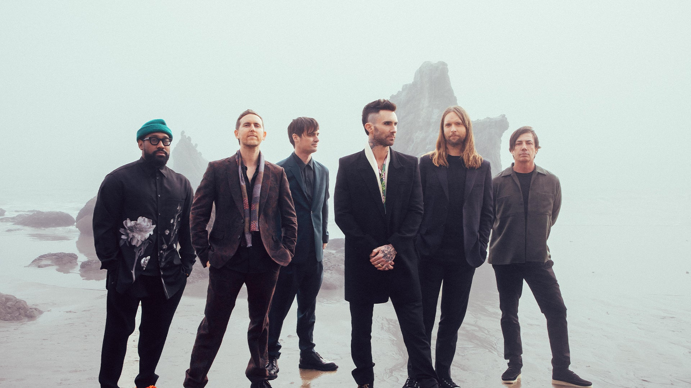

TOP 77 - IN PRIME -
La seva historia
Llocs turistics
Resteurants
La part antigua
Esports
Colonies
Tradicions
La corrida
Els templers
Sant martí
Rutes
Contacte

La botiga TOP en el mercat
Per a mes informacio contacte amb nosaltres
CONTACTE
CONTACTE